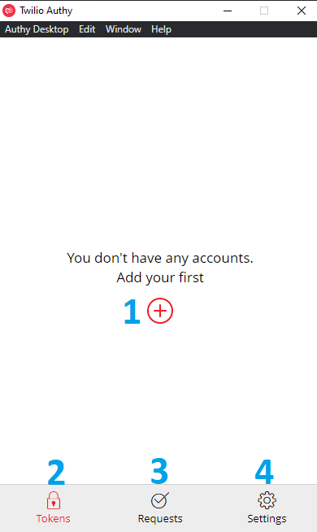
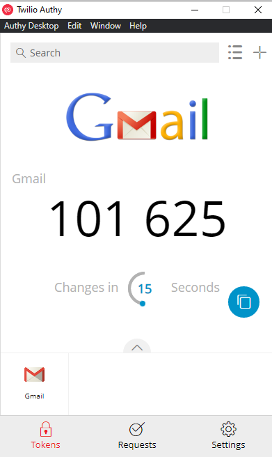

Authy || أوثي
الاسم: أوثي
المهمة: إضافة طبقة حماية أخرى غير اسم المستخدم وكلمة المرور وتسمى التحقق
بخطوتين
أنظمة التشغيل التي يعمل عليها: ويندوز، ماك أندرويد، آيفون "IOS"
الثمن: مجاني
كيف يعمل؟
يقوم برنامج Authy بتقديم خدمة التحقق بخطوتين (2FA) بحيث يكون إدخال اسم المستخدم وكلمة المرور باعتبارها الخطوة الأولى و رمز التحقق المرسل الى التطبيق على هاتفك الذكي "على تطبيق أوثي" هي الخطوة الثانية
يمتاز برنامج أوثي بالتالي:
يمكن من خلال البرنامج وضع خطوة تحقق أخرى لمعظم البرامج الموجودة عبر الانترنت مثل : (حسابات التواصل الاجتماعي، حساب البريد الالكتروني، برامج حفظ البيانات وأي تطبيق أو منصة تدعم هذه الميزة)
يتكون هذا الدليل من ثلاثة أقسام رئيسية :
1- تنصيب برنامج أوثي
-
الحصول على التطبيق:
- لجميع الأجهزة نضغط هنا
-
تظهر الصفحة التالية، نقوم باختيار المناسب بحسب الجهاز الخاص بنا

-
بعد تحميل التطبيق نقوم بفتحه، تظهر النافذة التالية:
- نقوم بإدخال رمز الدولة الخاص بنا
- نقوم بإدخال رقم الهاتف المحمول
- نضغط "Submit"

-
عند الضغط على "Submit" تظهر النافذة التالية:
- نقوم بإدخال الايميل الشخصي
- نضغط "Submit"

-
عند الضغط على "Submit" تظهر النافذة التالية: وهي لتأكيد الحساب، حيث يقوم التطبيق بارسال كود سري بأحد
الطريق التي تختارها في الخطوة التالية، ثم تقوم بإدخال هذا الكود لتأكيد الحساب
- في حال كنت تمتلك حساب Authy مسبقا تقوم باختيار هذا الخيار ليتم التأكيد عن طريق الحساب الموجود على جهاز آخر
- لإرسال الكود عن طريق واتساب || Whatsapp
- لإرسال الكود عن طريق رسالة SMS على رقم الهاتف المحمول الذب سبق وأدخلناه
- لتلقي الكود عن طريق مكالمة صوتية عادية على الرقم الذي سبق وأدخلناه

-
بعد اختيار الطريقة المناسبة، يقوم التطبيق بإرسال رسالة تحتوي على كود نقوم بإدخال في المكان المخصص لها
كما في الصورة التالية
- نقوم بإدخال كود التأكيد
- في حال أردنا تغيير الطريقة التي نتلقى بها كود التأكيد، نضغط على هذا الخيار فيقوم بإعادتنا إلى الخطوة السابقة

-
تظهر الصفحة التالية بعد تأكيد الحساب، وهي الواجهة الرئيسية للتطبيق
- لإضافة بيانات حساب جديد تريد استخدام التطبيق عليه
- "Tokens:" جميع العناصر المحفوظة داخل البرنامج (مثال: حساب الجيميل)
- "Requests:" طلبات الدخول من العناصر المحفوظة
- "Settings:" إعدادات الحساب
 - لتعيين كلمة سر للتطبيق، نقوم بالضغط على "Settings" لتظهر النافذة التالية:
- "General:" إعدادات الحساب وكلمة المرور، نضغط على General
- "Accounts:" العناصر التي تم إضافتها للبرنامج
- "Devices:" الاجهزة المرتبطة بالبرنامج (حيث يمكن العمل عليه من الهاتف المحمول)
-
تظهر النافذة التالية:
- لتغيير رقم الهاتف المحمول
- لتغيير الايميل
- الكود الخاص بحسابنا على تطبيق Authy
- لتعيين كلمة سر للتطبيق، نضغط على "Enable" تظهر النافذة التالية

-
تظهر نافذة إنشاء كلمة سر كالتالي:
- نقوم بإنشاء كلمة سر وحفظها، ثم إدخالها في المكان المخصص، ثم نضغط على Enable
-
نقوم بتأكيد كلمة السر
- نكتب كلمة السر مرة أخرى في الحقل المخصص للتأكيد ثم نضغط على Confirm
2- لإضافة حساب على تطبيق أوثي وتفعيل التحقق بخطوتين:
-
-
نقوم بالضغط على إشارة الزائد "+" لإضافة حساب

-
-
تظهر النافذة التالية، تحتوي على حقل لإدخال رمز خاص بالحساب الذي نريد ربطه بتطبيق أوثي

-
للحصول على الرمز الخاص بحساب جوجل:
- نذهب إلى المتصفح، نضغط على الصورة أعلى يمين أو يسار المتصفح
- نضغط على إدارة حسابك أو "Manage your google account"

- تظهر الصفحة التالية:
- في القائمة الجانبية، نضغط على الأمان أو "Security"
- نبحث عن "التحقق بخطوتين" أو "Two-step authentication" ونضغط عليها

- تظهر الصفحة التالية:
- نضغط على "البدء" أو "Get started"

- تظهر الصفحة التالية:
- نقوم بإدخال كلمة السر الخاصة بحسابنا على جوجل ثم نضغط على "التالي" أو "Next"

- تظهر الصفحة التالية:
- نقوم باختيار الدولة وإدخال رقم الهاتف المحمول الذي نريد ربطه بالحساب
- نختار إرسال رسالة نصية لإرسال كود أو رمز لتأكيد أن الرقم الذي سبق إدخاله متاح
- نضغط "إرسال" أو "Send"

- تظهر الصفحة التالية:
- نقوم بإدخال الرمز الذي تم إرساله إلى الرقم في الخطوة السابقة، ثم نضغط على "التالي" أو "Next"

- تظهر الصفحة التالية:
- نضغط على "تشغيل" لتفعيل ميزة التحقق بخطوتين عن طريق رقم الهاتف

- تظهر الصفحة التالية وتعني أنه تم التفعيل:

- في نفس الصفحة السابقة ننزل لأسفل قليلا لنجد "تطبيق Authenticator" نضغط على السهم بجانبها

- تظهر الصفحة التالية:
- نضغط على "إعداد تطبيق المصادقة"
- تظهر النافذة التالية:
- نقوم بالضغط على "هل يتعذر مسح الرمز ضوئياَ؟"

- تظهر النافذة التالية:
- نقوم بنسخ الكود الظاهر في الصورة، ثم لصقه في الحقل المخصص له في تطبيق أوثي كما في الخطوة التالية
- نضغط على "التالي" أو "Next"
- نقوم بفتح نافذة تطبيق أوثي التي تركناها في الخطوة الأولى:
- ننسخ الكود الذي أخذناه من الخطوة السابقة في الحقل المخصص له

- تظهر النافذة التالية:
- نقوم باختيار اسم الحساب الذي نريد أن يظهر به
- نختار الصورة الخاصة به من القائمة
- نضعط على "Save"

- تظهر النافذة التالية:
-
يظهر لنا رمز مؤلف من 6 أرقام يتم توليده عشوائيا من جديد كل 30 ثانية:
- نقوم بنسخ الرمز ولصقه في الخطوة التالية
 - نعود إلى المتصفح
- نقوم بلصق الكود في الحقل المخصص له ثم نضغط على "إثبات الصحة"
- الآن تم إضافة خطوة تسجيل ثانية لحساب الـ Gmail، لذلك عند التسجيل من جديد سوف يطلب منك كلمة السر والرمز الموجود في تطبيق أوثي، أي خطوتين للتسجيل وهو معنى "التحقق بخطوتين"